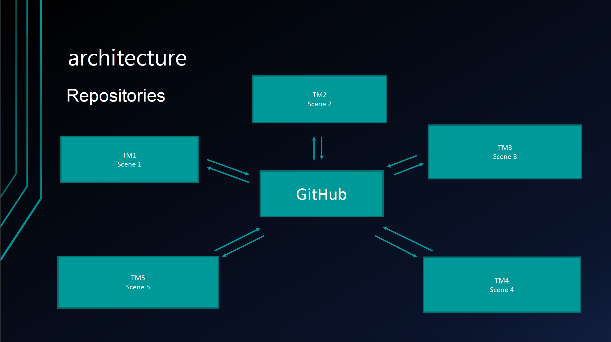

Brewing Java Architecture
Project Overview:
- The game is designe to be a Galaga-type game
- Movement: Left, Right, Front, and Back.
- There will be a repository of different enemies and levels.
- The game will also include different power-ups.
Key Architectural Drivers:
- Access to files without changing core files.
- Simutaneous Access
- Easy Testing
- Sharing data/limit data access.
Architectural Style Choices:
REPOSITORIES
- Allows quick file sharing
- Openness
- Central data store
- Strict data format
PUBLISH-SUBSCRIBE
- More difficult to test
- Publishers and subscribers
- Shared Repositories.
Final Choice: Repositories
Architecture:

Conclusion:
- Risks associated with our choice Repositories:
- Corruptio/hacking/accidental deletion
- Multiple branches
- Lack of internet
- Data format/File type